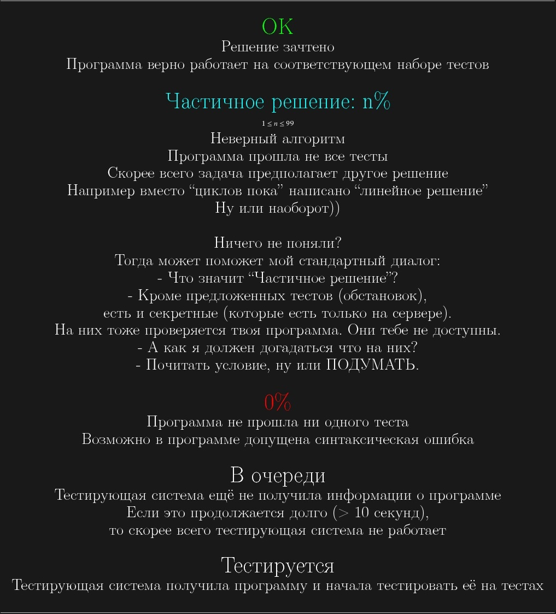

{\Large \textcolor{green}{ОК}}\\
Решение зачтено\\
Программа верно работает на соответствующем наборе тестов\\
\\
{\Large \textcolor{cyan}{Частичное решение: n\%}}\\
{\tiny $1\leq n\leq 99$}\\
Неверный алгоритм\\
Программа прошла не все тесты\\
Скорее всего задача предполагает другое решение\\
Например вместо ``циклов пока'' написано ``линейное решение''\\
Ну или наоборот))\\ \\
Ничего не поняли?\\
Тогда может поможет мой стандартный диалог:\\
- Что значит ``Частичное решение''?\\
- Кроме предложенных тестов (обстановок),\\
есть и секретные (которые есть только на сервере).\\
На них тоже проверяется твоя программа. Они тебе не доступны.\\
- А как я должен догадаться что на них?\\
- Почитать условие, ну или ПОДУМАТЬ.\\
\\
{\Large \textcolor{red}{0\%}}\\
Программа не прошла ни одного теста\\
Возможно в программе допущена синтаксическая ошибка\\
\\
{\Large В очереди}\\
Тестирующая система ещё не получила информации о программе\\
Если это продолжается долго (> 10 секунд),\\
то скорее всего тестирующая система не работает\\
\\
{\Large Тестируется}\\
Тестирующая система получила программу и начала тестировать её на тестах